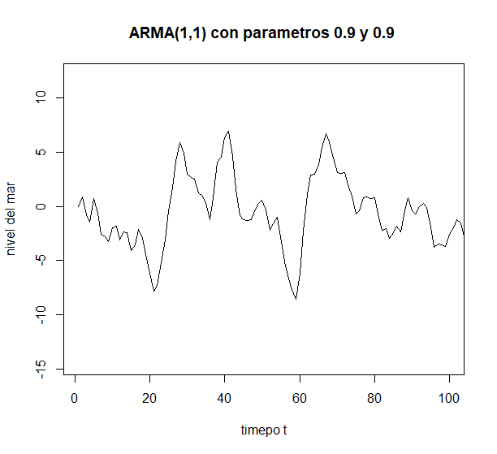
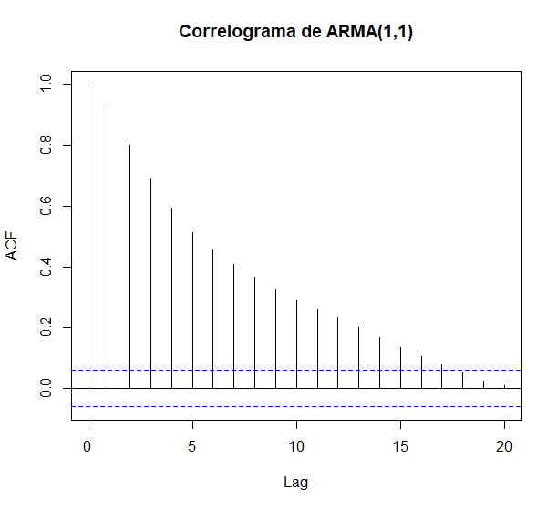
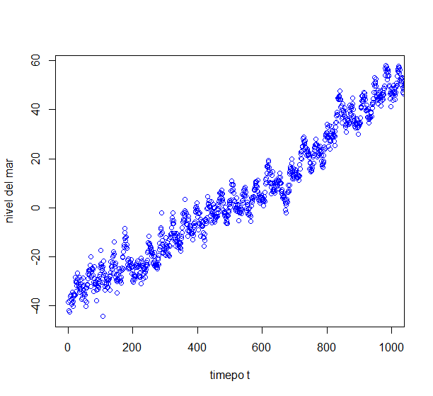
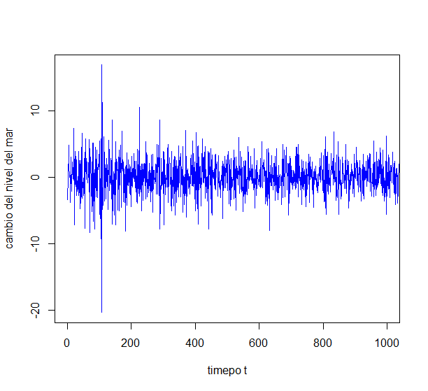
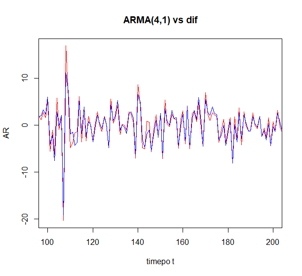

Karlo Guevara
Karlo Guevara
Non-independent time
series
I investigated AR(p), MA(q), ARMA(p,q) tools and extreme value theory to deal with non-independent time series. These tools are autoregressive models of order p or AR(p), MA(q), ARMA(p,q) and extreme value theory applied to time series. We will also look at the autocorrelation function, which will help us determine when it is feasible to apply these methods. We will present some examples of how these methods are fitted to real data and the results obtained using these tools.
The Autoregressive Moving Average process represents the value X_t as a function of past data, plus white noise and an approximation of the mean. In other words, it combines the AR(p) and MA(q) processes. This is explored in depth in the final PDF and presentation. An example of an ARMA(1,1) process with parameters theta = 0.9 and sigma = 0.9 and its correlogram are also presented.
|  |  |
But what we're interested in is applying ARMA(p,q) to the data of the global mean sea level of the last few years. Due to the structure of this time series, we couldn't work with it directly. But I noticed that we could work with the time series of the global mean sea level change instead. The following images show the time series of the global mean sea level and its differences:
|  |  |
I wanted to fit an ARMA(p,q) model to the above time series. After performing the necessary calculations and tests. I found that the best model fitting the time series was an ARMA(4,1) with the parameters θ1 = 0.11952744, θ2 = −0.04775842, θ3 = 0.01596729, θ4 = 0.12763155 and ψ1 = −0.39039621. The red time series is the resulting fit.

The complete presentation of the work and the R commands used for it are in this PDF . The complete work is in this PDF . It should be noted that the work was not only fitting the time series. It was also about researching the topic of time series and the respective models (since the course did not cover those topics).